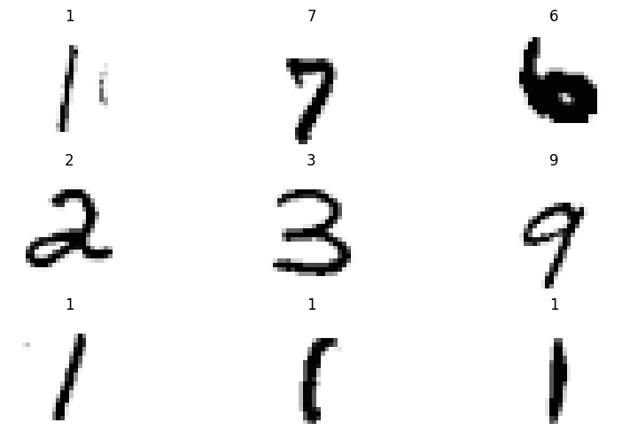
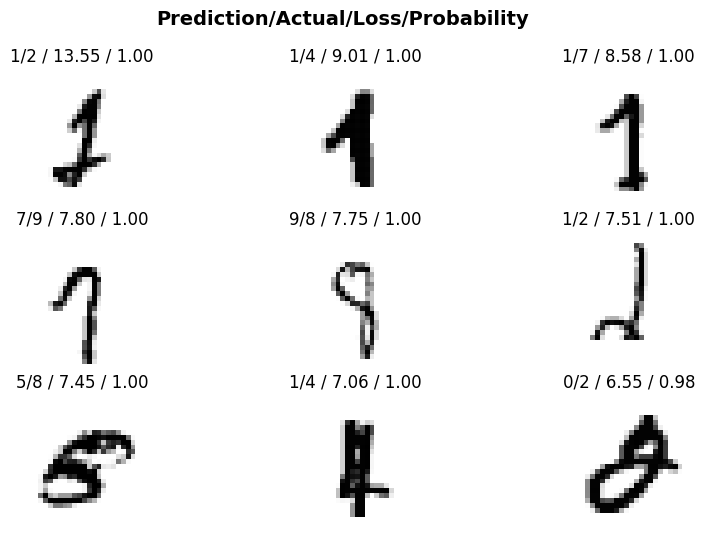
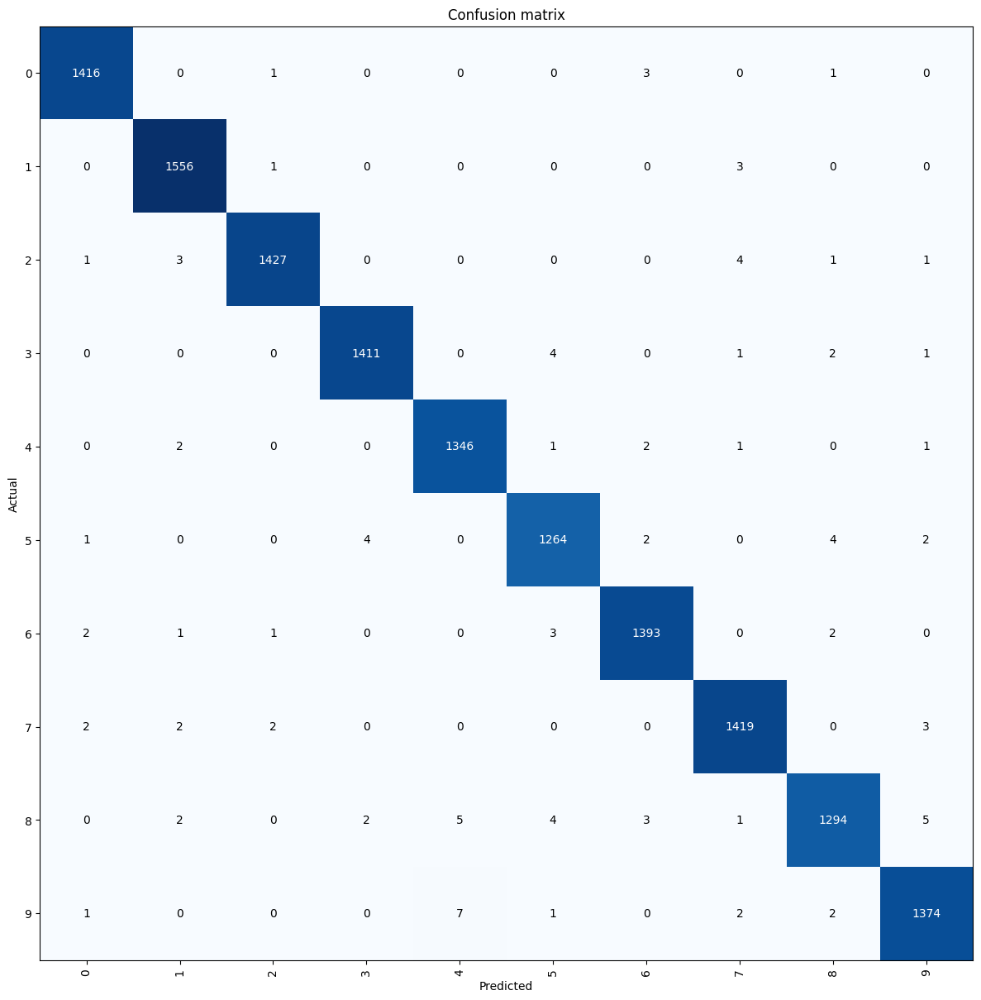

from fastai.vision.all import *
import warnings
warnings.filterwarnings('ignore')10 Modeling pipeline with fastai’s High-Level API
This chapter will cover the process of training a model for multi-class classification on MNIST data using the fastai high(application)-level API. The image below illustrates the general steps involved in using the high-level API:
10.1 Download data
Download instruction can be found in Downloading Data from Kaggle section of Modeling pipeline with Neural Networks chapter.
10.2 Creating DataLoaders
First step in the process is creating a fastai Dataloaders. To begin, we will import the fastai.vision module, as we are working with image classification tasks in this case.
Important
It is generally not recommended to use import * in production scenarios. Instead, it is advisable to use precise imports. For instance, the function ImageDataLoaders is located in the fastai.vision module, specifically in the data.py file. Therefore, the recommended import statement would be:
from fastai.vision.data import ImageDataLoadersThis approach ensures that only the required function is imported, which is considered a good coding practice in production environments.
For simplicity, we will stick with import * notion.
Next, we will create our fastai dataloaders object.
Note
It’s important to note that fastai DataLoaders are not identical to PyTorch dataloaders. In fastai, many of the PyTorch classes are inherited and additional functionalities are added through a technique called “monkey-patching”. This means that fastai extends the functionality of PyTorch classes by adding custom features and methods, providing a higher-level and more user-friendly API for deep learning tasks.
dPath = Path("../data/mnist_png/")
dls = ImageDataLoaders.from_folder(
path = dPath,
train = "training",
valid_pct = 0.2,
seed=42,
img_cls = PILImageBW,
item_tfms=Resize(28),
batch_tfms=None,
bs=128
)
print(type(dls))<class 'fastai.data.core.DataLoaders'>As evident from the code snippet above, it is possible to create a fastai DataLoaders in just one line of code. Let’s delve into the details of what’s happening with this function. The code above is creating a fastai DataLoaders object named dls using the from_folder method of ImageDataLoaders class. Here’s a breakdown of the parameters being passed:
path: The path to the dataset folder is specified asdPath, which uses thefastaiPathfunction. It’s important to note that thePathfunction infastaiis a monkey-patched version of the standardpathlib.Pathfunction in Python.train: The name of the subfolder within the dataset folder that contains the training data, specified as “training”.valid_pct: The validation data percentage is set to 0.2 (20%), which means that the data will be randomly split into training and validation sets. Specifically, 80% of the data will be used for training, while 20% will be used for validation.seed: The random seed used for reproducibility, specified as 42.img_cls: The image class to be used is specified asPILImageBW, as the MNIST images are black and white single-channel images.PILImageBWis one of the general data types available in thevision.coremodule of thefastailibrary.item_tfms: The image transformation to be applied to each item, specified as Resize(28) which resizes the images to a size of 28x28 pixels. This operation is performed on CPU.batch_tfms: The batch transformations to be applied, specified as None which means no batch transformations are applied.batch_tfmsis usually transforms performed on GPU.bs: The batch size, specified as 128.
Finally, the type(dls) statement is used to print the type of the dls object, which should be a fastai DataLoaders object.
fastai offers various functions for easy inspection of data through data loaders. Let’s use the show_batch function to visualize one batch of the data.
dls.show_batch(figsize=(10,6)) 
It appears that we have successfully created a data loader with just one line of code. To better inspect the data, we can check the dimensions of a batch of data. Let’s use the one_batch function on the dls data loader object to obtain a single batch of data.
x,y = dls.one_batch()
print(f'Shape of X:{x.shape} \nShape of Labels:{y.shape}')Shape of X:torch.Size([128, 1, 28, 28])
Shape of Labels:torch.Size([128])Upon inspection, we can observe that the input image batch has the following dimensions:
- Batch size: 128
- Number of channels: 1 (single channel)
- Image height: 28
- Image width: 28
Additionally, the labels are represented as a vector of size 128, with one label per image.
10.3 Creating a learner
The next step involves creating a fastai Learner object using the vision_learner method.
learn = vision_learner(
dls=dls,
arch= resnet18,
pretrained=False,
metrics=accuracy,
n_in=1
)
print(type(learn))<class 'fastai.learner.Learner'>As evident from the code snippet above, it is possible to create a fastai Learner in just one line of code. Let’s delve into the details of what’s happening with this function. The code above is creating a fastai Learner object for training a model on the MNIST dataset. Here’s what each parameter in the vision_learner method does:
dls: This parameter specifies the data loaders object (dls) that we previously created for the dataset.arch: Thearchparameter specifies the neural network architecture to be used for training. In this case, we are using resnet18 fromtorchvision.models, which is a popular convolutional neural network architecture.fastaimodels are PyTorch models, so they can accept any valid PyTorch model, whether it is custom-defined or sourced from thetorchvisionmodel hub ortimmlibrary, by simply specifying the model name. This allows for flexibility in choosing different neural network architectures for training, depending on the specific requirements of the task at hand.pretrained: This parameter indicates whether to use pre-trained weights for the neural network. In this case, False means that we are not using any pre-trained weights.metrics: This parameter specifies the evaluation metric(s) to be used during training. In this case,accuracyis used, which measures the classification accuracy.fastaiprovides other pre-implemented single-label classification metrics that you can use, and you can find them in the metrics documentation.n_in: This parameter specifies the number of input channels in the images. Since the MNIST images are grayscale with a single channel, n_in is set to 1.
The type(learn) statement is then used to print the type of the learn object, which should be a fastai Learner object.
Important
The vision_learner class in fastai comes with a lot of “useful defaults” that have been derived from training task in hand on various datasets. For instance, it automatically selects the AdamW optimizer as the default optimization function, sets the learning rate to 0.001 by default and loss function as flattened CrossEntropyLoss. You can refer to the documentation of vision_learner to explore other default settings and configurations that may be useful for your specific task.
print(f'Optimizer function used: {learn.opt_func}')
print(f'Default learning rate: {learn.lr}')
print(f'Default loss function: {learn.loss_func}')Optimizer function used: <function Adam at 0x7f53ce8a6e50>
Default learning rate: 0.001
Default loss function: FlattenedLoss of CrossEntropyLoss()fastai Learner class also comes with a lot of helpful functions. An example would be Learner.summary function which prints a summary of the model, optimizer and loss function.
learn.summary()Sequential (Input shape: 128 x 1 x 28 x 28)
============================================================================
Layer (type) Output Shape Param # Trainable
============================================================================
128 x 64 x 14 x 14
Conv2d 3136 True
BatchNorm2d 128 True
ReLU
____________________________________________________________________________
128 x 64 x 7 x 7
MaxPool2d
Conv2d 36864 True
BatchNorm2d 128 True
ReLU
Conv2d 36864 True
BatchNorm2d 128 True
Conv2d 36864 True
BatchNorm2d 128 True
ReLU
Conv2d 36864 True
BatchNorm2d 128 True
____________________________________________________________________________
128 x 128 x 4 x 4
Conv2d 73728 True
BatchNorm2d 256 True
ReLU
Conv2d 147456 True
BatchNorm2d 256 True
Conv2d 8192 True
BatchNorm2d 256 True
Conv2d 147456 True
BatchNorm2d 256 True
ReLU
Conv2d 147456 True
BatchNorm2d 256 True
____________________________________________________________________________
128 x 256 x 2 x 2
Conv2d 294912 True
BatchNorm2d 512 True
ReLU
Conv2d 589824 True
BatchNorm2d 512 True
Conv2d 32768 True
BatchNorm2d 512 True
Conv2d 589824 True
BatchNorm2d 512 True
ReLU
Conv2d 589824 True
BatchNorm2d 512 True
____________________________________________________________________________
128 x 512 x 1 x 1
Conv2d 1179648 True
BatchNorm2d 1024 True
ReLU
Conv2d 2359296 True
BatchNorm2d 1024 True
Conv2d 131072 True
BatchNorm2d 1024 True
Conv2d 2359296 True
BatchNorm2d 1024 True
ReLU
Conv2d 2359296 True
BatchNorm2d 1024 True
AdaptiveAvgPool2d
AdaptiveMaxPool2d
____________________________________________________________________________
128 x 1024
Flatten
BatchNorm1d 2048 True
Dropout
____________________________________________________________________________
128 x 512
Linear 524288 True
ReLU
BatchNorm1d 1024 True
Dropout
____________________________________________________________________________
128 x 10
Linear 5120 True
____________________________________________________________________________
Total params: 11,702,720
Total trainable params: 11,702,720
Total non-trainable params: 0
Optimizer used: <function Adam at 0x7f53ce8a6e50>
Loss function: FlattenedLoss of CrossEntropyLoss()
Callbacks:
- TrainEvalCallback
- CastToTensor
- Recorder
- ProgressCallbackThe Learner.summary function provides a wealth of useful information, including:
- Model layers and their trainable state
- Total number of parameters in the model, as well as the number of trainable parameters
- The optimizer used during training
- The loss function employed
- The callbacks used, which are special additional functions that run at various stages of training and inference. You can refer to the documentation on callbacks to learn more about them.
10.4 Training the model
fastai provides different fit functions in the Learner class that allow for flexible and convenient training of machine learning models. Here’s an overview of some of the commonly used fit functions in Fastai:
fit: This is the most commonly usedfitfunction infastai, which trains the model using stochastic gradient descent (SGD) or its variants. It allows you to specify the number of epochs, learning rate, weight decay, and other training parameters. You can also specify callbacks for custom behavior during training.fit_one_cycle: This function implements the 1-cycle policy, a popular learning rate scheduling technique in deep learning. It automatically sets the learning rate, momentum, and weight decay to optimal values based on a predefined schedule. This can help improve the model’s performance and speed up training.fit_sgdr: This function implements stochastic gradient descent with restarts (SGDR), a learning rate scheduling technique that periodically resets the learning rate to a smaller value during training. This helps the model escape from local minima and find better solutions.fit_flat_cos: This function uses a cosine annealing learning rate schedule, where the learning rate is decreased gradually over time following a cosine curve. This helps the model converge to a better solution by avoiding overshooting.fine_tune: This function fine-tunes a pre-trained model by training only the last few layers while keeping the earlier layers frozen. This is useful for transfer learning, where you start with a pre-trained model and then fine-tune it on your specific task with limited data.
These are some of the different fit functions available in fastai’s Learner class, providing flexibility and convenience for training machine learning models with various techniques and strategies.
We will use fit_one_cycle function for our training example and train for five epochs.
learn.fit_one_cycle(5)| epoch | train_loss | valid_loss | accuracy | time |
|---|---|---|---|---|
| 0 | 0.174721 | 0.149860 | 0.958000 | 00:48 |
| 1 | 0.097696 | 0.082462 | 0.976143 | 00:46 |
| 2 | 0.062112 | 0.063939 | 0.982357 | 00:47 |
| 3 | 0.029472 | 0.030471 | 0.990286 | 00:47 |
| 4 | 0.012919 | 0.026187 | 0.992857 | 00:47 |
As we can see above, the fit_one_cycle function in fastai provides a progress bar(while training, not shown above) and displays statistics in a neat table after every epoch, which includes:
- Train and validation loss
- The defined metric, in this case
accuracyon the validation set - Time taken to run that particular epoch
10.5 Analyzing Model Performance
After training our model, we achieved an impressive accuracy rate of over 99% on the MNIST testing dataset. Additionally, fastai provides convenient functions such as ClassificationInterpretation, which allows us to easily plot losses and generate a confusion matrix for further model evaluation and analysis. These tools are useful in gaining insights into the performance of our trained model and making informed decisions for model refinement and improvement.
First we will initiate ClassificationInterpretation object from our model.
interp = ClassificationInterpretation.from_learner(learn)We can now visualize our top losses, which are examples where our model was highly confident in its prediction but got it wrong. By examining these cases, we can identify potential issues with the data labeling process or areas where our model struggles in accurately identifying the class of the image. Here in plot_top_losses we have passed two arguments:
- Number of images to be displayed
- Figure size
interp.plot_top_losses(9, figsize=(10,6))
From the above example, we can observe that our model occasionally confuses between:
- Digits 1, 2, and 7
- Digits 0, 5, and 8
This is not uncommon, as these digits bear a close resemblance to each other. It is important to note that such misclassifications are not necessarily indicative of a problem with our model, but rather a reflection of the inherent similarities between these digits.
We can also generate a visualization of the confusion matrix using the plot_confusion_matrix function. This allows us to gain further insights into the performance of our model by visually representing the misclassifications and the true positive rates for each class.
interp.plot_confusion_matrix(figsize=(12,12))
10.6 Saving and Loading the model
We can save the model weights, optimizer state and DataLoaders transform by using export function.
Note
We will explore additional techniques for extracting model weights beyond what has been covered so far in later chapters.
learn.export(fname="mnist_highlevel.pkl")To load the model we can use load_learner function.
learn = load_learner(
fname=dPath/"mnist_highlevel.pkl",
cpu=True
)load_learner function takes following arguments -
fname- The path of the saved learner objectcpu- This parameter is set toTrue, indicating that the learner object should be loaded onto the CPU for inference.
10.7 Performing inference
To perform inference, we will first obtain the file path of an image from our testing folder.
fname = (dPath/"testing/4").ls()[0]
print(f'Sample file path: {fname}')
Image.open(fname)Sample file path: ../data/mnist_png/testing/4/1010.pngWe have selected an image of the digit four from our test dataset. To perform inference we will use the predict method from Learner class.
preds = learn.predict(fname)
print(preds)('4', TensorBase(4), TensorBase([1.6044e-06, 2.5403e-06, 2.2100e-06, 2.8801e-07, 9.9986e-01,
4.1187e-07, 1.7771e-05, 2.4048e-05, 5.0337e-07, 9.5490e-05]))The prediction results include the following information:
- decoded model label:
4. - The index with highest probability:
TensorBase(4). - Raw probabilities of each class in the vocabulary.
10.8 Conclusion
In this chapter, we delved into the intricacies of building a model pipeline using fastai’s high-level API. We covered the essential steps of data preparation, model training, and inference, and demonstrated how the rich functionality of fastai’s high-level API can streamline these processes using MNIST data. In the next chapter, we will continue our journey by exploring similar concepts but with a focus on fastai’s mid-level API.